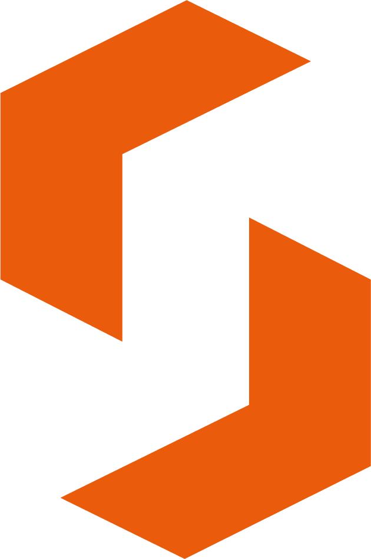

Fluxo comercial de produto
Esteiras: o Kanban inteligente do SGS
Uma estrutura configurável para organizar eventos, tipos, etapas, formulários, SLA, diretórios e guias adicionais.
Fluxo comercial de produto
Uma estrutura configurável para organizar eventos, tipos, etapas, formulários, SLA, diretórios e guias adicionais.

Ele não compra um quadro bonitinho. Ele compra controle do fluxo, menos improviso e uma operação que não depende da memória do time.
A esteira mostra que o produto já nasce com etapas, tipos, regras e organização pensados para a operação real do cliente.
Ela define como o evento entra, percorre as etapas e mantém o fluxo organizado do início ao fim.
Ajuda a falar com o cliente sem cair em ambiguidades técnicas.
É o nome interno do conceito, mas a venda acontece como esteira.
É ele que caminha entre etapas, acumula informações e registra a operação.
A esteira combina elementos simples para construir um fluxo que pode ser adaptado por cliente e por operação:
Isso garante padronização: cada cliente pode ter sua própria operação sem perder a lógica do produto.
Entrada
Análise
Aguardando ação
Finalização
Cada etapa representa um momento do processo. O evento sempre está em uma coluna, e o comercial consegue explicar isso como uma operação previsível, visual e fácil de entender.
A etapa pode carregar sua própria configuração, sem quebrar o restante da esteira.
Formulário associado à etapa, com captura de dados no momento certo do fluxo.
Status / fases internos para refletir estados do trabalho sem mudar a posição no Kanban.
SLA para medir permanência e reforçar compromisso operacional.
O cliente não precisa comprar um fluxo engessado. Ele compra um fluxo configurável por etapa, com governança e espaço para evolução.
Organizam documentos e evidências por contexto do evento, como fotos, termos, laudos ou qualquer agrupamento necessário para a operação.
Para o comercial, isso reforça que a esteira não é só fluxo: ela também organiza a informação que sustenta a decisão.
Funcionam como apoios complementares do evento, ajudando a orientar o usuário com informações extras, checklists ou conteúdos de suporte.
Isso transmite flexibilidade para o cliente sem exigir customização pesada em cada operação.
É nele que ficam o tipo, a etapa atual, os formulários aplicados, os documentos, os guias e o histórico de movimentação.
Fica claro o próximo passo, reduzindo dúvida e retrabalho.
Ganha rastreabilidade, indicadores e controle do ciclo de ponta a ponta.
O cliente entende onde cada evento está e o que precisa acontecer para avançar.
Todos seguem o mesmo fluxo, com menos variação entre equipes e filiais.
Etapas, documentos e decisões ficam organizados e auditáveis.
O produto suporta crescimento sem reinventar o processo a cada novo cliente.
Não é só um Kanban genérico. É um produto que já fala a língua do fluxo, do evento e da governança operacional.
Organiza cartões, mas exige muita adaptação para refletir a realidade do negócio.
Já nasce com esteira, evento, etapas, tipos, formulários e rastreabilidade no centro da solução.
O cliente acompanha o caminho do evento sem depender de planilha ou controle paralelo.
Cada cliente pode ter sua esteira, suas etapas e suas configurações.
As informações relevantes ficam organizadas em um único fluxo de trabalho.
O fluxo pode crescer sem precisar refazer o conceito da operação.
O SGS já entrega a lógica de fluxo que o cliente precisa para começar a operar com mais controle.
Diretórios e guias adicionais ajudam a operar com mais clareza e menos dispersão de informação.
Cada etapa pode ser monitorada pelo tempo de permanência, reforçando comprometimento e prioridade.
O cliente ganha estrutura para crescer sem perder visibilidade sobre o fluxo.
O SGS organiza a operação em uma esteira inteligente: o evento percorre etapas configuráveis, cada fase pode carregar suas regras, e toda a operação fica visível para gestão e auditoria.
Finalização
Obrigado pela atenção. Seguimos evoluindo o SGS como uma plataforma de fluxo, governança e valor comercial.
Gilberto Ferreira
Líder de Desenvolvimento